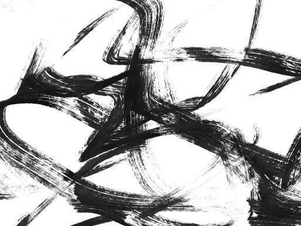
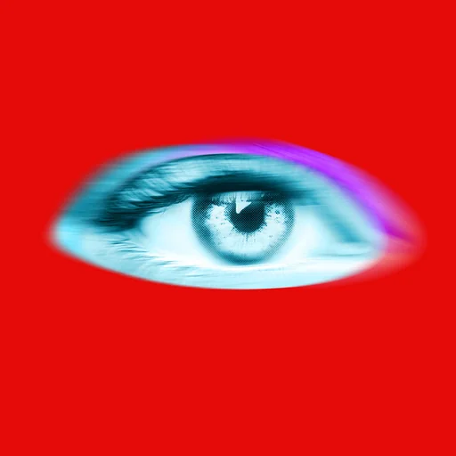

_Fool me once, shame on you. Fool me twice, shame on me. Fool me three times, fuck the peace signs, load the chopper, let it rain on you_ - J.Cole
#101 – Joscha Bach: Artificial Consciousness and the Nature of Reality
Lex Fridman Podcast
#392 – Joscha Bach: Life, Intelligence, Consciousness, AI & the Future of Humans
Lex Fridman Podcast
Bullshit-Katalysator
1. Erst Beobachtung von Absicht trennen. Was > Wie. Noch ohne Warum.
2. Kein „also“ ohne Beleg.
3. Nur 3 Gegen-Geschichten, die ohne böse Absicht auskommen. Nicht 3 mal das Gleiche. 3 Unterschiedliche. Systemfehler? Taktik? ...
4. Gegenprobe: Woran würde meine Version scheitern? Welche Version überlebt nur, weil ich dem anderen die Absicht schon unterstelle?
5. „Die“ eine Sachfrage stellen. Eine Frage bei der mindestes eine Schublade zugeht.
Kopfkino entsorgen.

Vergiss mal nicht. :)
